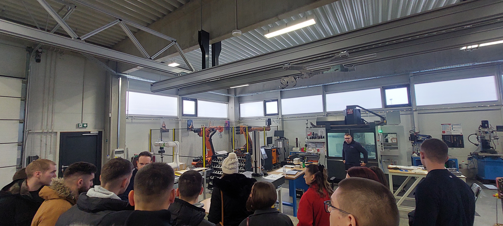
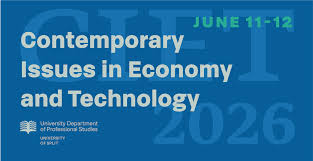

Provjerite najnovije informacije o udruzi te saznajte novosti o projektima i suradnjama u kojima možete
sudjelovati.
Stručna eskurzija studenata Elektronike i Elektroenergetike

Naši studenti elektronike i energetike, u pratnji prof. Marije Jelović, Tonka Kovačevića i
Vjekoslava Zrna, sudjelovali su u trodnevnoj stručnoj ekskurziji s ciljem povezivanja stečenih
teorijskih znanja i njihove primjene u praksi.
Prvoga dana posjećen je Tehnički muzej „Nikola Tesla“ u Zagrebu, gdje su studenti imali priliku
vidjeti brojne Tesline izume te se upoznati s njegovim životnim i znanstvenim putem. U sklopu muzeja
obišli su i rudnik, kao i prometni dio u kojem su prikazani počeci tramvajskog prometa i razvoja
lokomotiva.
Drugoga dana studenti su posjetili tvrtku Atinel u Varaždinu, vodeću hrvatsku tvrtku u području
automatike i robotike, koja razvija rješenja za svjetsku automobilsku industriju. Tijekom obilaska
upoznali su se s djelatnošću tvrtke, tehnološkim procesima i primjenom suvremenih rješenja u
industriji.
Trećega dana ekskurzija je završena posjetom Memorijalnom centru Nikola Tesla i rodnoj kući Nikole
Tesle u Smiljanu, gdje su studenti imali priliku dodatno se upoznati s Teslinim životom, radom i
naslijeđem koje je ostavio u području znanosti i tehnike.
Ova stručna ekskurzija studentima je omogućila povezivanje nastavnog gradiva s praktičnim primjerima
te upoznavanje s važnim mjestima i institucijama iz područja elektrotehnike, energetike i
industrije.
CIET 2026

CIET 2026, dana 15.12.2025.
Zadovoljstvo nam je objaviti da Sveučilišni odjel za stručne studije Sveučilišta u Splitu, Hrvatska,
organizira 7. međunarodnu konferenciju Contemporary Issues in Economy and Technology – CIET 2026,
koja će se održati 11. i 12. lipnja 2026. godine.
Konferencija se organizira u partnerstvu s institucijama: Florida Universitària (Španjolska), George
Bacovia University u Bacăuu (Rumunjska), Fakultetom ekonomskih znanosti i menadžmenta Sveučilišta
Nicolaus Copernicus (Poljska) te Lab-STICC-om, Sveučilište u Brestu (Francuska).
Cilj konferencije CIET je poticanje interdisciplinarnog dijaloga i suradnje među istraživačima i
stručnjacima iz područja ekonomije, poslovanja, inženjerstva i obrazovanja.
Pozivamo na prijavu znanstvenih i stručnih radova, a posebno radova studenata u okviru (ali ne
isključivo) sljedećih tematskih područja: Računovodstvo i financije, Turizam, trgovina i
poduzetništvo, Elektrotehnika, informacijska tehnologija i strojarstvo
Inovativne metodologije poučavanja i učenja. Pridružite nam se u razmjeni inovativnih ideja,
raspravi o suvremenim izazovima i izgradnji trajnih akademskih mreža. Studenti Odjela za stručne
studije oslobođeni su plaćanja katizacije, a studenti sa svih ostalih institucija plaćaju reduciranu
cijenu kotizacije.
Više informacija potražite na poveznici: CIET 2026
Radujemo se vašem sudjelovanju!
S poštovanjem,
Organizacijski odbor
Najava: 1 redovna skupština Udruge AXIS Split

Datum objave: 23.12.2025.
Alumni AXIS Split Sveučilišnog odjela za stručne strudije održat će prvu redovnu skupštinu 23.12.2025. godine,
s početkom u 12:30 sati u vijećnici Sveučilišnog odjela za stručne strudije.
Dnevni red:
- Donošenje odluke o udruživanju u ASUS udruge
- Izbor zastupnika u skupštini ASUS-a
- Odluka o otvaranju žiro računa Udruge AXIS
- Pristupnica za učlanjivanje u Udrugu
- Pristupnica za učlanjivanje u Udrugu
Najava: Osnivačka skupština Udruge AXIS Split
Datum objave: 20.10.2025.
Na osnivačkoj skupštini dana 20.10.2025. izabrano je vodstvo udruge Alumni AXIS Split Sveučilišnog odjela za stručne strudije
sa mandatom od 20.10.2025. do 20.10.2029.
U sazivu:
- Predsjednik: Vjekoslav Zrno
- Potpredsjednica: Marija Jelović
- Tajnica: Petra Orlić
- Članovi Upravnog odbora: Laura Lara Gizdić, Ivica Lovrić